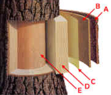
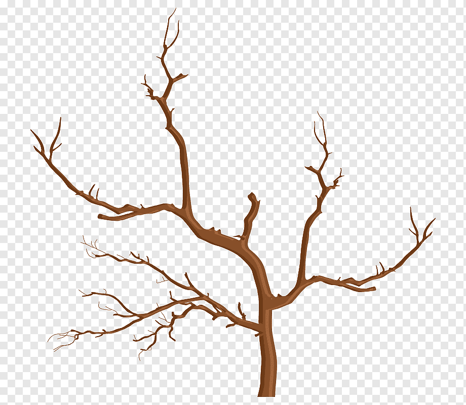
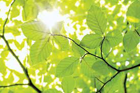
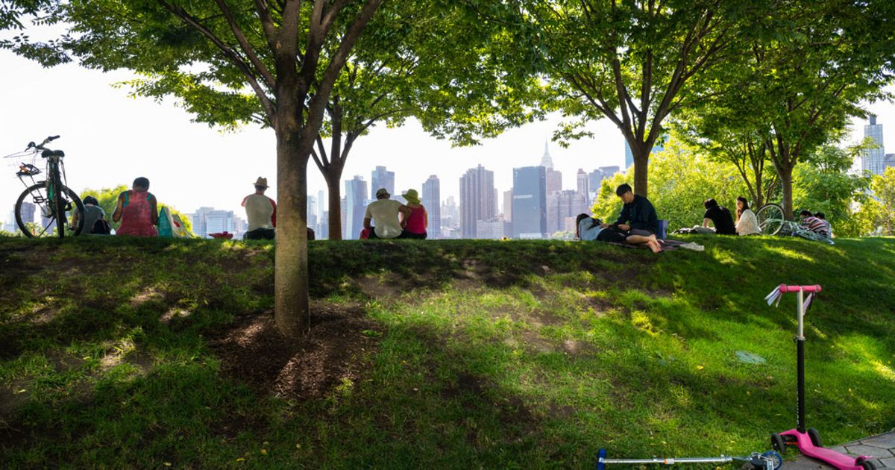

Tree roots are typically found in the top three feet of the soil.
They also expand well beyond the drip-line, often occupying an area two to four times the size of the tree crown.
A tree’s root system works to absorb water and minerals from the soil, anchor the tree to the ground,
and store food reserves for the winter.
Trunk
The trunk of a tree is made up of five different layers--Outer and inner bark, the cambium cell layer,
sapwood and heartwood.
The outer bark is the tree's protection from the outside world.
Continually renewed from within, it helps keep out moisture in the rain and prevents the tree from losing moisture when
the air is dry. It insulates against cold and heat and wards off insects.
The inner bark, or “phloem,” is the pipeline through which food is passed to the rest of the tree.
It lives for only a short time then dies and turns to cork to become part of the protective outer bark.
The cambium cell layer is the growing part of the trunk.
It annually produces new bark and new wood in response to hormones that pass down through the phloem with food from
the leaves. These hormones, called “auxins,” stimulate growth in cells.
Auxins are produced by leaf buds at the ends of branches as they start growing in the spring.
Sapwood is the tree's pipeline for water moving up to the leaves. Sapwood is new wood.
As newer rings of sapwood are laid down, inner cells lose their vitality and turn to heartwood.
Heartwood is the central, supporting pillar of the tree.
Although dead, it will not decay or lose strength while the outer layers are intact.
A composite of hollow, needlelike cellulose fibers bound together by a chemical glue called lignin,
it is in many ways as strong as steel.


Branches and twigs
Branches and twigs grow out of the tree trunk and serve as support structures for leaves, flowers and fruit.
They also transport materials between the trunk and the leaves.
Leaves
Leaves carry out photosynthesis, making food for the tree and releasing oxygen into the air.
The narrow needles of a Douglas Fir can expose as much as three acres of chlorophyll surface to the sun.
The lobes, leaflets and jagged edges of many broad leaves help evaporate the water used in food-building,
reduce wind resistance and even provide “drip tips” to shed rain that could decay the leaf.

QR code for this website
Evolution of trees
400 million years ago
Fossil records of the first tree-like plants appear, such as lycophytes, ferns, and horsetails.
These types of plants did not have seeds yet, but were the first to have vascular systems,
which was a big deal because that gave plants the ability to raise off the ground and form trunks and branches.
Before this, all of earth’s plants had to live close to the ground, like mosses and liverworts.
380 million years ago
First evidence of seeded plants appear. These were very simple seeds that had no integument, or layer of protection,
like we see with modern seeds.
360 million years ago
Start of the Carboniferous period and first evidence of trees with “true” woody stems.
These wooden trunks helped trees achieve greater heights and also improved water transport.
We find the first fossil records of gymnosperms during this period.
Gymnosperms are seeded plants in which their seeds are not protected by an ovary (or fruit).
We have many species of gymnosperm today, including conifers (pines, junipers, spruce, etc.), ginkgoes, and cycads.
200 million years ago
Evidence of the first ginkgo trees.
150 million years ago
Evidence of the first pine trees.
125 million years ago
Angiosperms began to evolve, meaning we see the first flowers on earth!
Angiosperms are plants that grow flowers and hold their seeds in a protective “ovary,” aka fruit.
Earth at this time was much warmer and covered with rainforest, which diversified the angiosperm group dramatically.
That’s why the majority of tree species we have around today are angiosperms.
With the evolution of angiosperms, we also get the evolution of pollinators like bees, butterflies, and hummingbirds.
67 million years ago
Evidence of the first maple trees.
56 million years ago
Evidence of the first oak trees.
Fast forward several million years and trees continued to diversity and evolve into the trees we see today.
Some go extinct, some improve and some stay relatively the same.
Importance of trees
Trees are vital. As the biggest plants on the planet, they give us oxygen, store carbon,
stabilise the soil and give life to the world’s wildlife. They also provide us with the materials for tools and shelter.
Health
The canopies of trees act as a physical filter, trapping dust and absorbing pollutants from the air.
Each individual tree removes up to 1.7 kilos every year. They also provide shade from solar radiation and reduce noise.
Some species of trees and shrubs are known to have medicinal properties. The oil from birch bark, for example,
has antiseptic properties.
Research also shows that within minutes of being surrounded by trees and green space, your blood pressure drops,
your heart rate slows and your stress levels come down.

Environment
Trees absorb carbon dioxide as they grow and the carbon that they store in their wood helps slow the rate of global warming.
They reduce wind speeds and cool the air as they lose moisture and reflect heat upwards from their leaves.
It’s estimated that trees can reduce the temperature in a city by up to 7°C.
Trees also help prevent flooding and soil erosion, absorbing thousands of litres of stormwater.
Wildlife
Trees host complex microhabitats. When young, they offer habitation and food to amazing communities of birds, insects,
lichen and fungi. When ancient, their trunks also provide the hollow cover needed by species such as bats,
woodboring beetles, tawny owls and woodpeckers. For example, one mature oak can be home to as many as 500 different species.